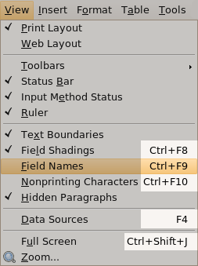

KeyboardShortcuts - Community Help Wiki
As well as using your mouse to operate software, you can also use your keyboard to perform specific functions. This page provides a list of keyboard shortcuts which you may find useful.
How to use a keyboard shortcut
Traditionally, keyboard shortcuts are written like so: Alt + F1. This means that you should press the Alt and F1 keys simultaneously. This is normally best achieved by holding down the modifier key (such as Ctrl or Alt or the Super(windows logo) key) and then pressing the second key once. You can then release the modifier key.
Finding system keyboard shortcuts
To find (and change) system-level keyboard shortcuts, one can (at least in later, GNOME-based distros, e.g. ubuntu karmic) run the Keyboard Shortcuts applet, e.g. via System>Preferences>Keyboard Shortcuts on the main menu.
Finding application-specific keyboard shortcuts
While there are many standard keyboard shortcuts (see below), most applications also have keyboard shortcuts which are specific to themselves. These can normally be found in the pull-down menus at the top of the application's screen. The example below shows a menu in OpenOffice.org Writer, with the keyboard shortcuts highlighted:

This section lists common keyboard shortcuts which you can use to operate parts of the desktop (such as windows and the menu bar).
|
Alt + F1 |
Open the Applications menu |
|
Run an application by typing its name in the box which appears | |
|
(Print Screen) Take a screenshot of the whole screen | |
|
Take a screenshot of the current window | |
|
Take a screenshot of a selected rectangle on the screen |
|
Alt + Tab |
Switch between currently-open windows. Press Alt + Tab and then release Tab (but continue to hold Alt). Press Tab repeatedly to cycle through the list of available windows which appears on the screen. Release the Alt key to switch to the selected window. |
|
Switch between currently-open windows in all Workspaces. Press Tab repeatedly to cycle through the list of available windows which appears on the screen. Release the Ctrl and Alt keys to switch to the selected window. | |
|
Lets you quickly switch between your Workspaces. |
These might not work on every machine, but are reasonably common:
|
Alt+F7 |
Moves the current window (can be moved with mouse or keyboard). |
|
Resizes current window (again, can be moved with mouse or keyboard). | |
|
Minimises current window. | |
|
Maximises current window. | |
|
Brings up window menu with with 'Always on Top' and 'Minimise' and 'Maximise' and above commands. |
These might change depending on the application you're using, but work for most common applications:
|
Alt+F5 |
Returns window to 'normal' or previous size. |
|
Closes window. |
Desktop Effects enabled shortcuts
All of the shortcuts listed in this section require Desktop Effects to be enabled.
|
Ctrl + Alt + Left/Right Cursor |
Spins the 'cube' that your workspaces reside on, allowing you to select the workspace you wish to use. |
|
Enables an 'expose' like feature that presents you with all the windows you currently have open, allowing you to select the one you wish to give focus to. | |
|
Unfolds your workspace cube allowing you to see more than one of your workspaces at once, using the left and right cursor keys with this active will allow you to select the workspace you wish to use. | |
|
Switch between currently-open windows across all workspaces. | |
|
Enables the 'scale' effect, it shows all windows from the current workspace. | |
|
Enables the 'scale' effect, it shows all windows from all workspaces. | |
|
Invert colours of the focused window. | |
|
Invert colours for the whole screen. | |
|
Zooms in on the screen. | |
|
Select a region to zoom into, using a rectangle. | |
|
Toggles 'Show Desktop'. | |
|
Resize focused window. | |
|
Move focused window. | |
|
Show window menu. | |
|
Zoom out, show workspace switcher |
These shortcuts do not apply in all applications, but usually perform the functions listed below.
|
Ctrl + C |
Copy the selected text/object |
|
Cut the selected text/object | |
|
Paste/insert the selected text/object | |
|
Select all text | |
|
Make the selected text bold | |
|
Make the selected text italic | |
|
Underline the selected text | |
|
Open a new document or window | |
|
Save the current document | |
|
Open another document | |
|
Print the current document | |
|
Undo the last change you made | |
|
Redo a change that you just undid |
Some of these shortcuts will restart important parts of your system. Only use them if you have to.
|
Ctrl + Alt + Delete |
Restart the computer immediately, without saving open files |
|
Rotate through supported screen resolutions | |
|
Rotate backwards through supported screen resolutions |
A list of low-level keyboard shortcuts is available on Wikipedia.
Application-specific shortcuts
This section covers common keyboard shortcuts for some important applications which are installed by default in Ubuntu.
|
Ctrl + T |
Open a new tab |
|
Rotate through each tab | |
|
Rotate backwards through each tab | |
|
Close the current tab (or browser if on last tab) | |
|
Enter a new web address | |
|
Show a list of your bookmarks | |
|
Show your browsing history | |
|
Enter a new web search in the search bar | |
|
Show a list of downloaded files | |
|
Display the current page full-screen | |
|
Stop loading the current page | |
|
Reload the current page |
These might not work for everyone, but can help with accessibility issues:
Alt Gr+Space Scrolls current tab/window down.
Alt Gr+Backspace Scrolls current tab/window up. You may find Alt Gr+Shift+Space works if Alt Gr+Backspace does not.
If you don't have Alt Gr, it might be labelled something else. It's usually to the right of the space bar.
See Mozilla Support for a full list of keyboard shortcuts in Firefox.
|
F7 |
Check the spelling of the current document |
|
Find and replace words | |
|
Undo the last change | |
|
Redo a change which you just undid | |
|
Align the current paragraph/selection to the left | |
|
Align the current paragraph/selection to the center of the document | |
|
Align the current paragraph/selection to the right | |
|
Show the current document full-screen |
Press Tools ▸ Customize… ▸ Keyboard to change keyboard shortcuts in LibreOffice.
Many laptops have function (Fn) keys which you can hold down to access more functions on the laptop's keyboard. A list of these functions should be available from the manufacturer of the laptop.
If you want to have quick access to lines of text by using a hotkey, for example to enter your email address in forms, then you can use xbindkeys. Xbindkeys has a GUI utility to allow easy settings of hotkeys, but be aware that it's a little more complicated than the default Ubuntu Shortcutkeys interface.
Install xbindkeys
sudo apt-get install xbindkeys
Create the default config file for xbindkeys
xbindkeys --defaults > /home/your-user-name/.xbindkeysrc
When thats done, install xbindkeys-config, the GUI for xbindkeys
sudo apt-get install xbindkeys-config
Now the utility that actually does the "typing"
Once each is installed, start both applications by bringing up "Run Application" with ALT -F2.
and
To keep the xbindkeys hotkeys active when you next start the computer you will have to add a new session, System --> Preferences --> Sessions. Put in the command "xbindkeys" into the command field (without the quotes).
You should be able to see the "Xbindkeys Config" window. Start a new hotkey. Hit "New" on the bottom row of buttons. Then use the edit area at the top right. Give the hotkey a name. Hit the "GetKey" button to set the keypress for a hotkey. Some hotkeys may conflict with other hotkeys on the system (a window will open or a compiz plugin will activate). If this happens then choose another combination like CTRL - ALT - F for example.
Now put the command to activate with that hotkey in the "Action" field. This can be anything, but to allow for the entry of a line of text into part of the GUI enter
xvkbd -xsendevent -text "myemail@server.com"
The example shows an email address but it can be any line of text. Now hit "Apply" and test the hotkey in a Firefox field, text editor, or anywhere that text can be entered. Please note that using "Run Action" will not be able to test the command in xbindkeys-config, you will have to test it somewhere else.
Replacing keys with other keys
If you want to use xbindkeys to override certain keys on your keyboard, you can catch them with xbindkeys, and then emit new keypresses using xmacro. To install xmacro, use:
After this, you can find out the commands for specific keypresses by starting xmacrorec:
First give it the key which will allow you to quit the app, then press the keys you want to know the codes for. After this, you can use those codes in the commands you tell xbindkeys to run, for example:
xmacroplay-keys :0.0 KeyStr Next
will simulate a key press of the PageDown key. Thus, in my .xbindkeysrc the following contents
"xmacroplay-keys :0.0 KeyStr Prior"
"xmacroplay-keys :0.0 KeyStr Next"
will turn the Backward/Forward buttons on my Thinkpad T41 into PageDown and PageUp keys, and will no longer disturb my browsing as I accidentally press those Backward/Forward while browsing.